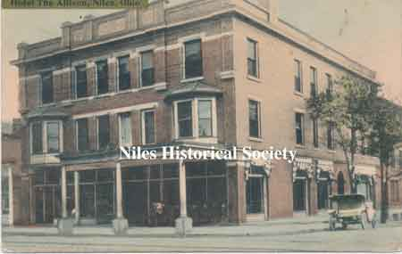
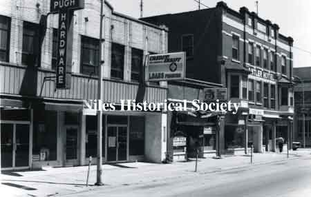
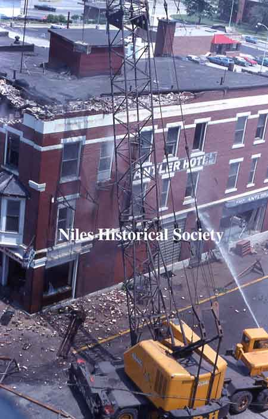
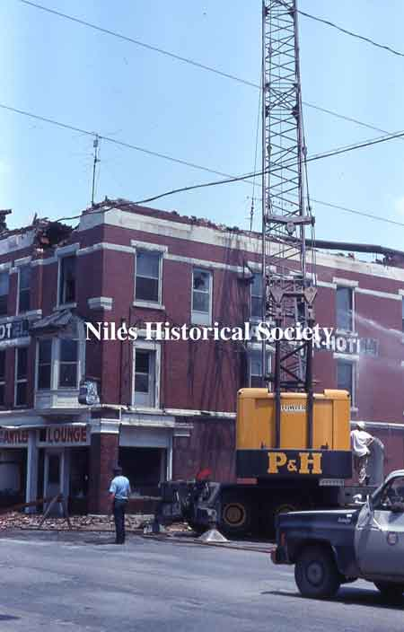
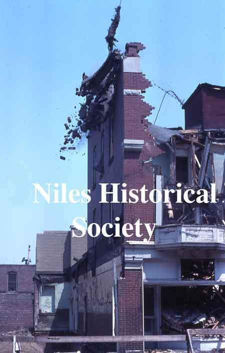
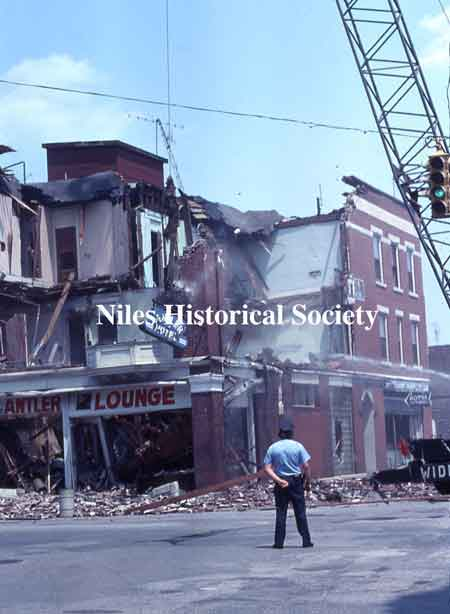

Ward-Thomas Museum


History of the Inns and Hotels in Niles, Ohio.
Ward — Thomas
Museum
Home of the Niles Historical Society
503 Brown Street Niles, Ohio 44446
Click here to become a Niles Historical Society Member or to renew your membership
Click on any photograph to view a larger image, click on image again to zoom into photograph.
|
Main Street had been paved in 1897. PO1.911 |
History of the Inns and Hotels in Niles, Ohio. The intersection of Main Street and Park Avenue was home to three inns or hotels from 1840-1900s. The northeast corner was originally the location of the Sandford House which was built in 1836. In 1906 the Allison building was now located on the site of the Sandford House or Inn. June 1976 was the beginning of the end of the Antler Hotel. The razing of this hotel ended 140 years of inn-keeping on the northeast corner of East Park Avenue and Main Street. |
|
| |
||
On the southeast corner was the old Ward Residence built in the early 1840s. After the Wards moved to their more elaborate home on Brown Street in 1862, known today as The Ward-Thomas Museum today. This house was used as a hotel for many years until it was torn down in 1918 for the Dollar Bank Building. PO1.912 |
The southwest corner was built as a hotel in 1842 and purchased by the Harris Family in 1865 who occupied it until 1904. From then until 1920, it was used as a store and warehouse. Pictured in the photograph: |
The photograph on the left shows the newsboys in front of the newstand where the Harris House was located. PO1.1082 Photo CA 1915 In 1920, the Harris heirs sold it to the Niles Trust Company. In 1930 the Niles Bank Building was completed on this site.
|
| |
||
|
PO1.665 |
Of the 54 lots platted by James Heaton in 1834, lot 43 and 44 at the north east corner of Main Street and James Street(Park Avenue) were deeded to A. Kingsley. In 1836, L.W. Sandford built the Sandford House which is highlighted in red below in a section of the Panoramic View of Niles, Ohio, 1882. |
|
| |
||
| The Sandford House appears to have a covered porch facing James Street(now Park Avenue) and two additional add-ons forming a 'U' shape with an open area in between the additions. SO1.493 The Sandford House was a large, comfortable inn with homey accommodations at a very reasonable price. Within a short time, this inn became a very popular place for local people and those who stopped overnight or for a period of time. |
From 1836 when the Sandford House or Inn first opened until the Allison Hotel was built in 1906, the mode of local transportation was generally by horse-drawn carriage or on horseback. About 1836, Jack Dempsey built the American Hotel on the northeast corner of East Park Avenue and Main Street. His hotel was managed by Jacob Robinson until 1867. Then Leroy Sandford purchased the American Hotel and named it the Sandford House. Charles Pew purchased the Sandford House in 1895. He kept the name, The Sandford House, and rented rooms for $2 a day. The first trains arrived in Niles in the mid-1850s and provided city-to-city travel. Streetcars became available in the late 1880s and provided point-to-point transportation. However, horses still provided the main transportation to locations that were unavailable to trains and streetcars. |
The Sandford House provided livery service whereby travelers could rent a carriage or horse for travel, parties, and funerals. Advertisement for Sandford House Livery. PO1.6 |
| PO1.495 |
Supposedly, the Sandford House was dismantled to make room for a new hotel, which was to be called the Allison Hotel. But, according to some old-timers, the Sandford House was not torn down; The Allison Hotel was built around it. During the 1930s the name of the Allison Hotel was changed to The Heaton Hotel and later to The Antler Hotel, which was torn down during June 1976, ending a 140-year-old tradition of an inn on the corner. The Allison Hotel built on the
site of the The Sanford House in 1904 had its formal opening
in 1905. It was located on the corner of North Main and East
Park Avenue in downtown Niles. |
|
|
|
||
| A letter mailed September 24, 1895 with the letterhead of the Sandford House. |
The letter reads: "Sept. 24, 1895 Mr. Andrew Steffen. Dear Friend. A few lines to ask you a favor. I have sent several letters to and (sic) old friend of mine S. E Watson. The puck and judge advertiser and knowing he collects off you every week I have use this method of finding him so would like you to hold the letter sent in your care for him untill (sic) he calls to collect and handed to him as I have important business with him and would like to hear from him at once. But haveing (sic) lost his address so happening to think of you thought I could trust your kindness to hand him the letter to oblige. Yours most respectfully, J. B. Myers 134 Huron St., Cleveland, Ohio. N.B. was a former citizen of Indianapolis and a ready smoker of old Tishmingo cigars and if Watson left the city please let me know at once by postal card. |
|
 Postcard view of the Allison Hotel, CA 1908. |
Comparing
the Panoramic View of Niles map above to the postcard on the left,
it appears that the previous entrance on James Street, now Park
Avenue, was changed to face North Main Street with areas for shops
on the ground level. |
|
The Allison Hotel lobby floor appears to be small marble tiles, set into a pattern, chosen for its durability and ease of maintenance. The furniture appears to be in the 'Craftsman' style using oak hardwood and leather which is also durable. As a side note, The McKinley High School which was under construction in 1914 also had this type of tile floor, except a with different pattern. McKinley High School became Edison Junior High School in 1958 and was demolished in 2004. |
||
P01.21 |
Construction of the Niles Bank Company began on November 25, 1929 and was completed in early 1930. The view looking diagonally across Main Street from the construction site reveals that the name of the Allison Hotel has been changed to Hotel Heaton during the 1930s. |
Location of the Antler Hotel prior to 1976. SO3.225 |
 P01.161 |
 P01.146 |
Mervyn’s Jewelry and the McKinley Restaurant were earlier businesses located in the first floor shops on North Main Street side of the Antler. The Parkway Restaurant, Soriano’s and Rice Electric were stores located on Park Avenue near the Antler. |
 S03.85 |
 S03.87a |
Photographs showing the demolition of the Allison Building in June 1976 during urban renewal. The buildings in downtown Niles had virtually remained unchanged after the McKinley Memorial(1917),the Dollar Bank Building(1918) and the Niles Bank Building(1930). Different businesses and ownership may have changed over the course of time, but the same buildings remained at their location in downtown Niles. |
 S03.82 |
 S03.88 |
In 1962, a fire destroyed Hoffman’s Deparment Store and two adjacent businesses, Ragazzo'’s and Pritchard'’s clothing stores. Many residents consider the 1962 fire and urban renewal as the cause of the demise of Niles’ downtown area. Also, the introduction of several strip malls, especially the Eastwood Mall, in this time period certainly added to the loss of businesses in the downtown area. Lack of downtown parking with the traffic patterns also influenced people in their shopping preferences. |
|
PO1.208 |
The northeast corner of Main Street and Park Avenue that the Sandford House, the Allison Hotel, the Hotel Heaton, and finally the Antler Hotel had occupied for 140 years is now the site for the Main Place Building. The Main Place Building is occupied by several small businesses; a dance studio and a Subway sandwich shop, among others (2018). |
The McKinley Memorial and the William McKinley Research Center are two downtown historical attractions for visitors to enjoy. The Ward-Thomas Museum on Brown Street offers many artifacts of the time period from the early 1800s up to the present day. |
| |
||
|
|
||

{kind=link}
{kind=link}
{kind=link}
{kind=link}
{kind=link}
{kind=link}
{kind=link}
{kind=link}
{kind=link}
{kind=link}
{kind=link}
{kind=link}
{kind=link}
{kind=link}
{kind=link}
{kind=link}
{kind=link}
{kind=link}
{kind=link}
{kind=link}
{kind=link}